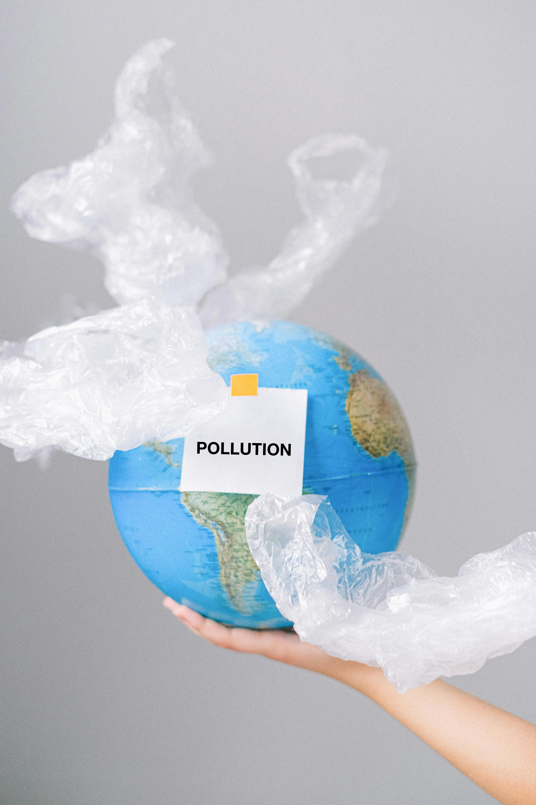
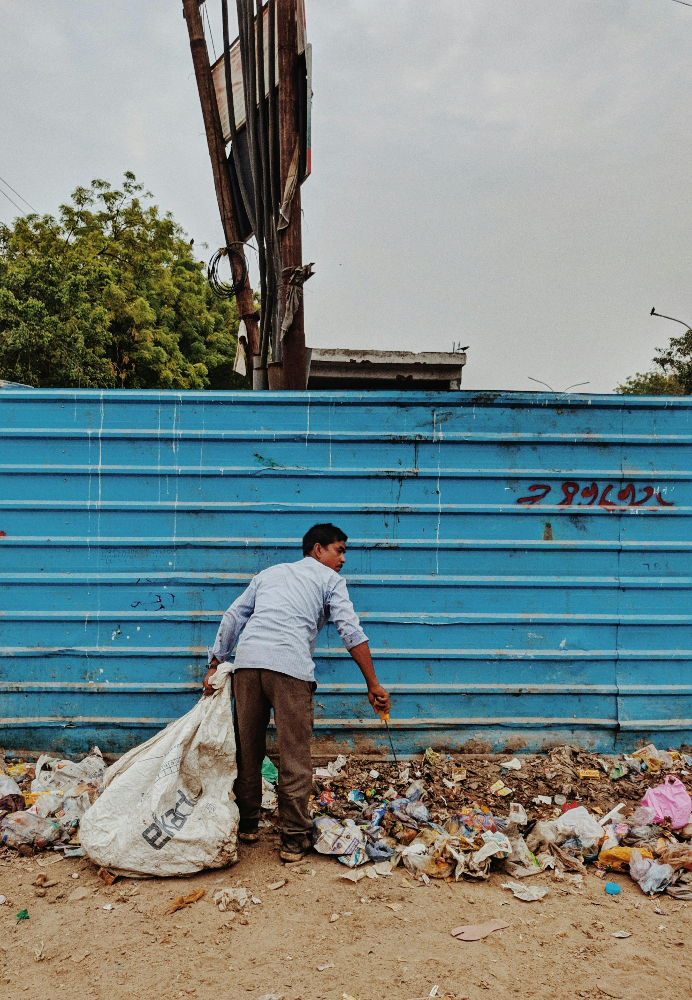

About Smart Greens
Smart Greens is more than just a recycling system — it's a step toward a cleaner, smarter future. Our goal is to make eco-friendly behaviour part of everyday life using accessible tech and reward-driven habits.

Our Vision
We envision a world where recycling is second nature. Through Smart Greens, we aim to promote sustainability by making recycling easier, more rewarding, and integrated into digital lifestyles.
The Problem We Tackle
Millions of recyclable materials end up in landfill due to lack of awareness or proper disposal tools. Smart Greens tackles this by using smart bins that track recycling in real-time and reward users with points.
Planet First
Our mission supports global sustainability goals. Whether it's cutting carbon emissions or encouraging reuse, Smart Greens prioritises the planet by encouraging local, measurable impact through small actions that add up.